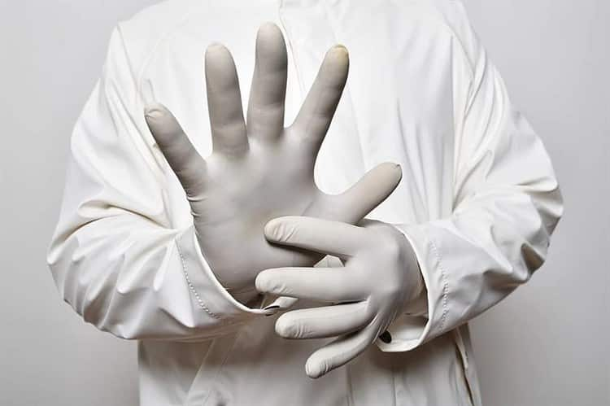
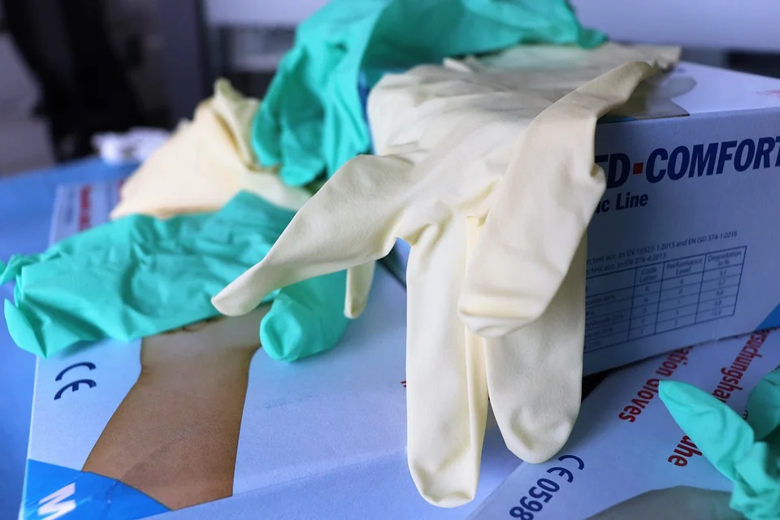

Covid-19: Los guantes podrían hacer más daño que bien
De acuerdo con la directora médica asociada del Programa de Control de Infecciones Pediátricas de la Universidad de Chicago, Allison Bartlett, el uso de guantes podría hacer más daño que bien a la hora de protegernos del nuevo coronavirus covid-19.
¿A qué se debe esto?A la forma de pensar de la gente.
El uso de guantes para protegernos del covid es un tema que despierta opiniones divididas.
En 1989, científicos del Departamento de Microbiología Clínica del Hospital Universitario de Saskatoon, Saskatchewan, Canadá, encontraron que los guantes actúan como barreras efectivas para la transmisión de partículas virales, incluido el VPH, en el entorno de la atención médica.
Años más tarde, en medio de la pandemia ocasionada por el SARS-CoV-2, los Centros para el Control y la Prevención de Enfermedades (CDC) señalaron que se recomienda el uso de guantes de examen desechables no estériles para atender a pacientes con sospecha o confirmación de covid-19.
Sin embargo, la Organización Panamericana de Salud (OPS) desmintió que el uso de guantes de látex en la calle sea útil para prevenir la infección del nuevo coronavirus covid-19.
'Puedes contraer la covid-19 a través de guantes contaminados.Si te tocas la cara con el guante contaminado, te puedes infectar.Para prevenir la infección de covid-19 es mejor lavarse las manos que usar guantes de látex', mencionó la OPS
La postura de la OPS/OMS es similar a la de la directora médica asociada del Programa de Control de Infecciones Pediátricas de la Universidad de Chicago, Allison Bartlett, quien asegura que, con el uso de guantes, la gente tiene la falsa creencia de que sus manos están limpias y protegidas cuando la realidad es que no es el caso.
'Creo que los guantes quirúrgicos desechables realmente no tienen un lugar en la protección contra el coronavirus', indicó la especialista.
Bartlett detalla que la gente podría contaminarse accidentalmente las manos cuando se quita los guantes, por lo que es importante lavarse las manos después de quitarse los guantes, pues al quitarnos estos elementos, nuestras manos no están limpias.
'Puedes sentirte protegido porque tu piel no toca una superficie, pero tan pronto como pasas de manipular ese espacio a tocar tu máscara o tu cara, eso es contaminación, incluso si usas guantes y en realidad no habrás logrado nada en materia de seguridad', concluye Bartlett.
(con información de medicalxpress)
Posted On: 2020-07-29T00:00:00
Posted By: ADRIÁN AGUIRRE




Content Date: 2020-07-29
Download Date: 2021-04-21
Document ID: L0C04ALND